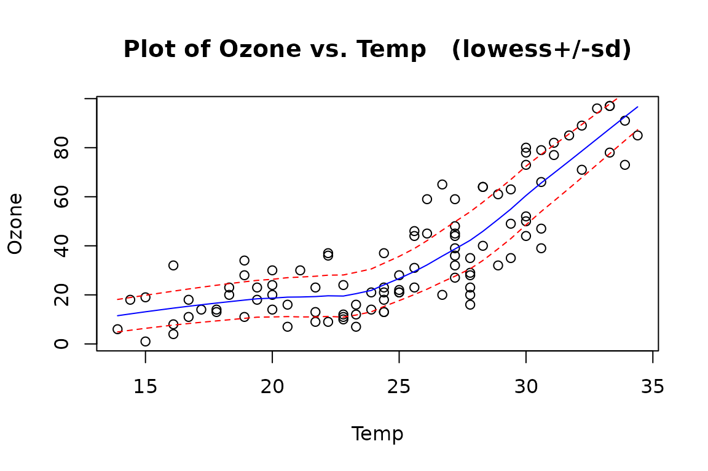
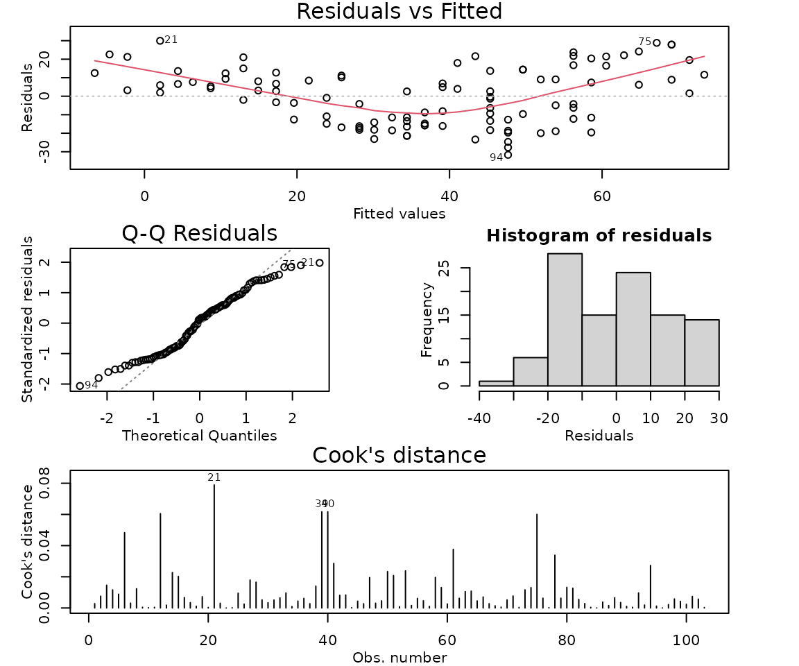
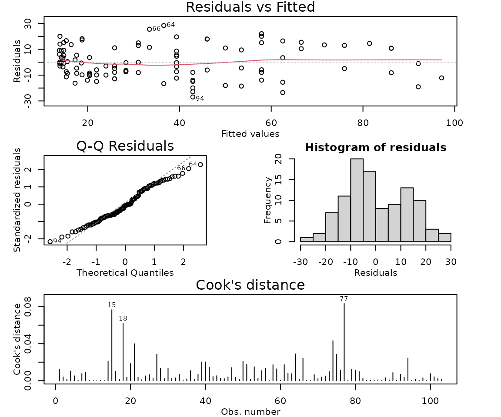
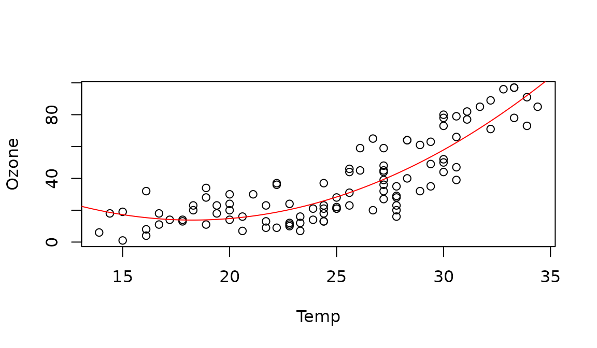

Case Study 4.2: STATS 201/8 Extra Case Study - Quadratic Model
Source:vignettes/articles/CS4_2.Rmd
CS4_2.RmdQuestion
Ozone is an air pollutant that causes some people to have breathing difficulties, and is harmful to vegetation. It is an essential part of the upper atmosphere, but is harmful at breathing level. The following data gives daily ozone concentration and temperature on 103 consecutive summer days in New York in the 1970s. We wish to describe the relationship between ozone concentration and temperature.
The data is in the file Ozone.csv, which contains the variables:
| Variable | Description |
|---|---|
| Ozone | ozone concentration at 2pm each day (parts per billion) |
| Temp | maximum daily temperature (degrees Celsius) |
Instructions:
- Comment on the initial plot of the data.
- Fit a linear model with an appropriate quadratic term, including model checks.
- Plot the data with your appropriate model superimposed over it.
- Discuss why there will be concerns about the independence assumption for this model.
- Look at your plot of the fitted model superimposed on the data. Does the entire model make sense? Briefly discuss any concerns.
- Write appropriate Methods and Assumption Checks. (You do not need to repeat the comments from the previous two questions here.)
- In 2-3 sentences of plain English, describe the relationship between temperature and ozone level, as if for an Executive Summary.
- Why can’t we give a single interval quantifying the effect of a one degree change in temperature on ozone level?
Question of interest/goal of the study
We wish to describe the relationship between daily ozone concentration and temperature, using data taken from consecutive summer days in New York in the 1970s.
Read in and inspect the data:
ozone.df = read.csv("Ozone.csv")
plot(Ozone ~ Temp, data = ozone.df)
trendscatter(Ozone ~ Temp, data = ozone.df)
Comment on the plot
Ozone concentration increases as temperature increases. However, the relationship appears to be curved, with a gentle increase in ozone at lower temperatures and a steeper increase at higher temperatures. The scatter is reasonably constant about the curved trend line.
Fit a linear model with an appropriate quadratic term, including model checks.
## Fitting the simple linear model to show the residual plot for demonstration only. In this case with a strong curve and constant scatter, we can go straight to fitting quadratic.
ozone.fit1 = lm(Ozone ~ Temp, data = ozone.df)
modelcheck(ozone.fit1)
## Plot has a strong quadratic pattern. Fit a quadratic relationship.
ozone.fit2 = lm(Ozone ~ Temp + I(Temp^2), data = ozone.df)
modelcheck(ozone.fit2)
summary(ozone.fit2)##
## Call:
## lm(formula = Ozone ~ Temp + I(Temp^2), data = ozone.df)
##
## Residuals:
## Min 1Q Median 3Q Max
## -26.9099 -8.5758 -0.8907 10.8325 28.4169
##
## Coefficients:
## Estimate Std. Error t value Pr(>|t|)
## (Intercept) 120.68430 25.46426 4.739 7.11e-06 ***
## Temp -11.69920 2.13876 -5.470 3.33e-07 ***
## I(Temp^2) 0.32020 0.04363 7.339 5.81e-11 ***
## ---
## Signif. codes: 0 '***' 0.001 '**' 0.01 '*' 0.05 '.' 0.1 ' ' 1
##
## Residual standard error: 12.51 on 100 degrees of freedom
## Multiple R-squared: 0.7602, Adjusted R-squared: 0.7554
## F-statistic: 158.5 on 2 and 100 DF, p-value: < 2.2e-16Plot the data with your appropriate model superimposed over it.
# Generate predicted values over a range for the model and use the lines command to add these as the appropriate line/curve to the plot.
pred.temp = data.frame(Temp = seq(12, 35, 0.1))
ozone.pred = predict(ozone.fit2, pred.temp)
plot(Ozone ~ Temp, data = ozone.df)
lines(ozone.pred ~ pred.temp[, 1], col = "red")
Discuss why there will be concerns about the independence assumption for this model.
The data were taken from consecutive days, so there is some concern about independence, because ozone is likely to carry over from one day to the next. We should therefore treat the results of this model with caution, especially regarding confidence interval width. (See Time Series later in the course.)
Look at your plot of the fitted model superimposed on the data. Does the entire model make sense? Briefly discuss any concerns.
The fitted model shows a slight downward trend in mean ozone concentration at the lowest temperatures that is not obvious from the initial data plot. This might be due to the constraints of the quadratic model, rather than reflecting a real relationship in the data.
Method and Assumption Checks (You do not need to repeat the comments from the previous two questions here.)
We fitted a linear model with a quadratic term, as exploratory plots revealed some curvature. The quadratic term was highly significant, so it was retained. After fitting the quadratic, the residuals were fine, normality was adequate, and there were no unduly influential points.
See comments from the two questions above for additional information about concerns with the fitted model.
Our model is: where .
Our model explained 76% of the variation in the data.
In 2-3 sentences of plain English, describe the relationship between temperature and ozone level, as if for an Executive Summary
We found strong evidence of a curved, increasing relationship between ozone concentration and temperature.
The relationship demonstrates very little change for temperatures between about 14C and 24C, with an average ozone concentration of roughly 20 parts per billion for temperatures in this range.
As the daily temperature increases from 24C to 35C, there is a much steeper increase in average ozone concentration.
Why can’t we give a single interval quantifying the effect of a one degree change in temperature on ozone level?
We have fitted a curved model to the data. This means that the effect of a one-degree change in temperature on ozone level depends on what the starting temperature was. For example, the effect of a one-degree increase is different at 20 degrees (not expecting much change to ozone level) than at 30 degrees (expecting an increase in ozone level).